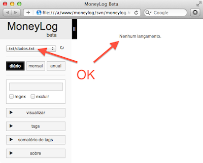

O MoneyLog Beta é para os nerds. É para quem prefere o poder e a flexibilidade, mesmo sendo mais difícil de lidar.
O seu código é sempre o mais atualizado, pois vem direto do GitHub. Funciona offline, pois só usa arquivos locais. Usa arquivos TXT para guardar os dados. Totalmente configurável (e raqueável) via arquivo JavaScript local. Pode usar junto com o Cloud. E a cor da interface é preta, a única cor verdadeiramente nerd :)
Pode quebrar? Claro! Por isso o nome Beta. Mas esta é a versão que eu uso, então eu tenho muito cuidado para deixá-la sempre funcionando.
Nota: Se você já usava a versão Beta antes de 2012, leia o Guia de Migração pois há algumas mudanças importantes que requerem sua ação.
Nota: O Google Chrome é feio, bobo e chato :(
Acesse a demonstração online: Que demo o que… Baixa logo aí.
Download
git clone \
https://github.com/aureliojargas/moneylog.git \
moneylog-beta
O repositório será copiado para a pasta local moneylog-beta. Quando ele terminar de baixar, abra o arquivo moneylog.html em seu navegador (que não seja o Google Chrome…).
Atualização
Para sincronizar a sua versão local com os arquivos mais recentes do GitHub:
cd moneylog-beta git pull
Rode este comando de tempos em tempos, ou coloque no cron.
Arquivo de configuração
Todas as configurações devem ser colocadas no arquivo config.js.
Este arquivo não existe, você deve criá-lo dentro de sua pasta do MoneyLog Beta, já na raiz. Basta copiar o modelo comentado, que vem na pasta sample:
cp sample/config-pt.js config.js
Pode ficar tranquilo, suas alterações no config.js não serão perdidas quando você atualizar o MoneyLog Beta.
Arquivo TXT para os lançamentos
Por padrão o MoneyLog Beta carrega os lançamentos do arquivo de exemplo: sample/data-pt.txt. NÃO coloque seus dados neste arquivo.
Crie uma pasta chamada txt dentro de sua pasta do MoneyLog Beta. E ali dentro crie os arquivos TXT para guardar seus lançamentos. Para começar simples, crie um único arquivo.
mkdir txt echo > txt/dados.txt
Nota: O arquivo TXT poderia estar em qualquer pasta de seu computador, mas é melhor deixar aqui dentro da pasta do MoneyLog Beta para evitar problemas com navegadores paranóicos.
Nota: Usar uma pasta chamada txt vai facilitar a integração com o Cloud.
Importante: Todos os arquivos TXT devem usar a codificação UTF-8.
Agora que você criou o arquivo, precisa configurar o MoneyLog para utilizá-lo. Edite o config.js e procure pela configuração dataFiles. Descomente a linha e coloque o path do seu arquivo, assim:
dataFiles = ['txt/dados.txt'];
Abra o MoneyLog Beta em seu navegador. Se aparecer a mensagem "Nenhum lançamento", sorria. Está tudo configurado e funcionando corretamente.

Inserir seus lançamentos
Agora é seu momento de glória, a hora de inserir seus próprios lançamentos no MoneyLog. Já sabe onde, né? No dados.txt, claro.
O formato de cada lançamento é simples, usa apenas três campos: data, valor, descrição. Dúvidas? Consulte o arquivo de exemplo sample/data-pt.txt e o Guia de Lançamentos.
Sempre que quiser conferir como está ficando, salve o arquivo no editor de textos e recarregue o MoneyLog Beta no navegador.
Você também pode importar dados de outros programas ou direto de seu Internet Banking. Utilize o conversor do MoneyLog, que entende os seguintes formatos: OFX, OFC, QIF (MS Money, Quicken).
Parabéns!
Seu MoneyLog Beta está funcionando corretamente e agora você já pode dominar seus gastos, não deixando nem um centavinho sequer esquecido.
Aconselho que você use um tempo o MoneyLog Beta para se acostumar bem com ele, antes de continuar a leitura deste artigo, que aborda tópicos mais avançados.
Faça seu próprio Widget
Se você manja de HTML e JavaScript, saiba que é muito fácil criar um widget novo ali na barra lateral, bastam poucas linhas de código no final de seu config.js.
Há quatro widgets de exemplo:
E o teu widget, vai ser do que? Lembretes? Algum somatório especial? Exportar os dados do extrato para CSV? Use a criatividade! E depois contribua lá no repositório: https://github.com/aureliojargas/moneylog-plugins
Funcionamento Online
O MoneyLog Beta foi criado para funcionar offline, em sua máquina. Mas você também pode ter fazê-lo funcionar (read-only) pela rede.
Para poder consultar o MoneyLog Beta na rede local, rode o Apache em sua máquina e coloque os arquivos do MoneyLog nele. Acesse normalmente pelo navegador, usando o endereço de sua máquina.
Para poder consultar o MoneyLog Beta pela internet, suba os arquivos para um servidor remoto (tipo o DreamHost) e coloque-os em uma pasta escondida de algum site que você já possua.
De uma forma ou de outra, aconselho também colocar uma senha de acesso para evitar curiosos.
Mas a melhor solução mesmo, é usar o MoneyLog Cloud para acesso remoto. Veja o próximo tópico.
Usar o MoneyLog Cloud ao mesmo tempo
Que tal ter uma solução completa, offline e online, usando dois sabores do MoneyLog ao mesmo tempo?
- Para acesso local, use o MoneyLog Beta.
- Quando estiver longe de sua máquina, use o MoneyLog Cloud.
Para que este esquema funcione, você deve usar o mesmo arquivo de configuração e os mesmos arquivos TXT para as duas versões. Veja como conseguir isso:
- Vá lá no Cloud e conecte-se.
- Entre na pasta /Apps/MoneyLog Cloud, que foi criada em seu Dropbox:
cd ~/Dropbox/Apps/MoneyLog Cloud
- Crie symlinks para os seus arquivos originais do MoneyLog Beta:
rm -rf config.js txt/ ln -s /caminho/para/moneylog-beta/config.js . ln -s /caminho/para/moneylog-beta/txt/ .
- Espere o Dropbox sincronizar tudo.
- Acesse novamente o Cloud, agora os seus dados devem aparecer.
Problemas com acentuação?
O Firefox parece ter algum problema em alguns casos, de carregar os acentos incorretamente da primeira vez. Mas basta recarregar a página e tudo fica normal. É um comportamento estranho, que não ocorre com todo mundo. Aqui no meu Firefox do Mac, por exemplo, isso não acontece. De qualquer forma, fica o recado: Reload em caso de problemas.
O Camino (derivado do Firefox pro Mac), não aceita os acentos nem com Reload. A única solução é mudar a codificação do seu arquivo TXT do padrão UTF-8 para o antigo ISO-8859-1. A troca é fácil:
# Converter os dados de UTF-8 para ISO-8859-1 cp dados.txt dados-utf.txt iconv -f utf-8 -t iso-8859-1 dados-utf.txt > dados.txt
Outros navegadores (inclusive IE7 e IE8) não apresentaram problemas com acentos em meus testes.
Não funciona no Google Chrome
A partir da versão 5.0.335, o Google Chrome endureceu as regras de segurança e bloqueou completamente a leitura de arquivos locais, mesmo que estejam na mesma pasta.
Sabe o seu querido arquivo TXT com os lançamentos do MoneyLog? Pois é, o Chrome não deixa mais fazer a leitura dele, e na tela só aparecerá a seguinte mensagem:
Carregando arquivo.txt...
As soluções:
- Usar outro navegador. Só o Chrome tem essa nova política extrema.
- Usar uma versão antiga do Chrome como a 4.x.
- Usar uma opção mágica na linha de comando, para que o Chrome desligue esta nova política:
- Linux: google-chrome --allow-file-access-from-files
- Mac: /Applications/Google\ Chrome.app/Contents/MacOS/Google\ Chrome --allow-file-access-from-files >/dev/null 2>&1
- Windows: "…\Application\chrome.exe" --allow-file-access-from-files